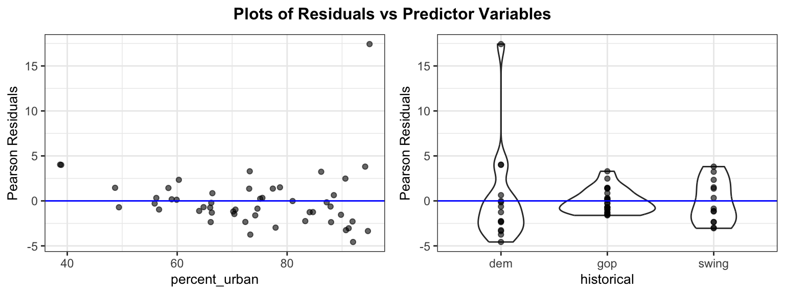
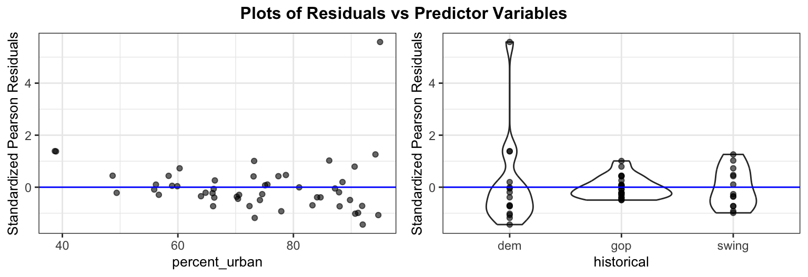

| term | estimate | std.error | statistic | p.value |
|---|---|---|---|---|
| (Intercept) | 0.7590 | 0.3269 | 2.3222 | 0.0202 |
| percent_urban | 0.0314 | 0.0037 | 8.4233 | 0.0000 |
| historicalgop | -1.6121 | 0.1332 | -12.0992 | 0.0000 |
| historicalswing | -0.8288 | 0.1015 | -8.1676 | 0.0000 |
Overdispersion and Inference for Poisson Regression
Day 26
Recap: where we left off
The equality_index data includes the number of anti-discrimination laws in each state (laws). We are modeling laws using percent_urban and historical (dem, gop, or swing) with a Poisson regression model.
Warm up
- In binomial logistic regression, what is the response variable? How is a Poisson count different?
Binomial: the number of successes out of a fixed number of trials \(n_i\) (so \(0 \le Y_i \le n_i\)). Poisson: a count of events with no upper limit.
- Interpret the
percent_urbancoefficient (0.031) in context.
Holding historical constant, each additional percentage point of urban residents multiplies the expected number of laws by \(e^{0.031} = 1.03\) (a 3% increase).
Review: Poisson regression model
If \(Y_i =\) # of events in a fixed interval of time/space, then \(Y_i \sim \text{Poisson}(\lambda)\)
This leads to the Poisson regression model for counts:
\[\log(\lambda) = \beta_0 + \beta_1 X_1 + \cdots + \beta_p X_p\]
or equivalently
\[\lambda = e^{\beta_0 + \beta_1 X_1 + \cdots + \beta_p X_p}\]
Assumptions
Linearity: the log of the mean of Y, \(\log(\lambda)\), must be a linear function of the predictors
Mean = Variance: the mean of a Poisson random variable must be equal to its variance
Independence: the observations must be independent
Overdispersion
The Poisson model assumes \(Var(Y_i) = \lambda_i\).
Overdispersion: the data are more variable than a Poisson model allows, \(Var(Y_i) > \lambda_i\)
- Typical causes: counts that are clustered, differences between units that we haven’t measured, events that are not independent
- Consequence: the Poisson standard errors are too small, so confidence intervals are too narrow and p-values are too small
Pearson residuals
\[Pres_i = \frac{Y_i - \widehat{\text{mean}(Y_i)}}{\widehat{SD(Y_i)}} = \frac{Y_i - \widehat \lambda_i}{\sqrt{\widehat \lambda_i}}\]
- Mean = \(\widehat \lambda\), SD = \(\sqrt{\widehat \lambda}\)
- If \(\widehat\lambda\)’s are “big” (\(\ge 5\)), Pearson residuals are \(\approx N(0,1)\) if Poisson model is correct. Can use to diagnose problems with linearity
- If overdispersed, then SD of Pearson residuals is \(>1\)
Pearson residuals for the Poisson model
sd(residuals(full_glm, type = "pearson"))[1] 3.24535ggResidpanel::resid_xpanel(full_glm, type = "pearson")
- Looking for any “left over” nonlinearity after fitting the model
- For categorical predictors, average should be \(\approx 0\)
- Should be \(N(0,1)\) if model is correct, so within \(\pm 3\)
Goodness of Fit test
\(H_0\): The Poisson model fits the data adequately.
\(H_A\): The Poisson model is deficient (a more complex, saturated model is required).
The Pearson \(\chi^2\) statistic (\(X^2\)) serves as our test statistic: \[X^2 = \sum_{i=1}^n \frac{(y_i - \widehat{\lambda}_i)^2}{\widehat{\lambda}_i} = \sum_{i=1}^n Pres_i^2\]
Under \(H_0\), \(X^2 \overset{\cdot}{\sim} \chi^2\) distribution with \(df = n - (p + 1)\).
Goodness of Fit test: example
X2 <- sum(residuals(full_glm, type = "pearson")^2)
X2[1] 516.1012df.residual(full_glm)[1] 461 - pchisq(X2, 46)[1] 0→ Strong evidence that the Poisson model is inadequate
Are means big enough for GoF test?
Min. 1st Qu. Median Mean 3rd Qu. Max.
1.962 3.532 7.267 13.460 20.429 42.016 . . .
→ The smallest fitted mean is about 2 and 38% of the fitted means are below 5, so the \(\chi^2\) approximation is only rough. But \(X^2 =\) 516 on 46 df is so extreme that we are not worried about the conclusion.
Estimating the dispersion parameter
\[\widehat\psi = \frac{X^2}{n - (p+1)} = \frac{516.1}{46} \approx 11.2\]
- If the Poisson model is correct, \(\widehat\psi \approx 1\)
- Here \(\widehat\psi \approx 11\): the variance is about 11 times what the Poisson model assumes
Quasipoisson model
Call:
glm(formula = laws ~ percent_urban + historical, family = quasipoisson,
data = equality_index)
Coefficients:
Estimate Std. Error t value Pr(>|t|)
(Intercept) 0.75902 1.09483 0.693 0.491625
percent_urban 0.03136 0.01247 2.515 0.015471 *
historicalgop -1.61214 0.44631 -3.612 0.000748 ***
historicalswing -0.82879 0.33989 -2.438 0.018672 *
---
Signif. codes: 0 '***' 0.001 '**' 0.01 '*' 0.05 '.' 0.1 ' ' 1
(Dispersion parameter for quasipoisson family taken to be 11.2196)
Null deviance: 962.66 on 49 degrees of freedom
Residual deviance: 413.49 on 46 degrees of freedom
AIC: NA
Number of Fisher Scoring iterations: 5Poisson vs. quasipoisson standard errors
| term | estimate | SE (Poisson) | SE (quasi) | ratio |
|---|---|---|---|---|
| (Intercept) | 0.7590 | 0.3269 | 1.0948 | 3.3496 |
| percent_urban | 0.0314 | 0.0037 | 0.0125 | 3.3496 |
| historicalgop | -1.6121 | 0.1332 | 0.4463 | 3.3496 |
| historicalswing | -0.8288 | 0.1015 | 0.3399 | 3.3496 |
- The estimates do not change
- Every quasipoisson SE is the Poisson SE multiplied by \(\sqrt{\widehat\psi} = 3.35\)
- Test statistics are compared to a \(t_{n-(p+1)}\) distribution instead of \(N(0,1)\)
Pearson resids still show overdispersion
Since they use the Poisson mean/sd
Standardized Pearson residuals
Use quasi versions of SD: \(SD(Y_i) = \sqrt{\psi \lambda_i}\) (also adjusts for leverage)
ggResidpanel::resid_xpanel(full_quasi, type = "stand.pearson")
. . .
→ better! perhaps one outlier we’d want to investigate further
Inference for coefficients
Confidence interval for \(\beta\):
- For Poisson model: \(\widehat \beta \pm z^* SE(\widehat\beta)\)
- For Quasi model: \(\widehat \beta \pm t_{n-(p+1)}^* SE_{quasi}(\widehat\beta)\)
Hypothesis testing for \(H_0: \beta = 0\) against \(H_A: \beta \ne 0\)
- Test stat: \(\frac{\widehat \beta - 0}{SE}\)
- \(\sim N(0,1)\) under Poisson model
- \(\sim t_{n-(p+1)}\) under Quasi model
Confidence Intervals: Interpretation
We construct intervals on the log (link) scale first, then exponentiate:
\[\text{Log scale:} \quad \hat{\beta}_j \pm z^* \cdot SE(\hat{\beta}_j)\] \[\text{Count/Response scale:} \quad e^{\hat{\beta}_j \pm z^* \cdot SE(\hat{\beta}_j)}\]
. . .
→ We are \((1-\alpha)\times100\%\) confident that a 1-unit increase in \(X_j\) is associated with a multiplicative change in the expected count by a factor between \(e^L\) and \(e^U\), holding all other variables constant.
Example: CI for percent_urban
How much does the average number of anti-discrimination laws change for a 10 percentage point increase in percent_urban?
For a 10 point increase, multiply the estimate and the SE by 10 (before exponentiating):
Poisson: \(0.314 \pm 1.96(0.037) = (0.241, 0.387) \to (1.272, 1.472)\)
Quasipoisson: \(0.314 \pm 2.013(0.125) = (0.063, 0.565) \to (1.065, 1.759)\)
. . .
→ Quasipoisson: we are 95% confident that a 10 percentage point increase in the percent of urban residents is associated with the average number of anti-discrimination laws being multiplied by between 1.06 and 1.76, holding historical constant.
. . .
→ The quasipoisson interval is about 3.4 times as wide as the Poisson interval. Using the Poisson model would make us overconfident about the effect of percent_urban.
Inference for \(\lambda\)
Reminder: \(\log \lambda = \eta\)
- Compute the predicted value and standard error on the link (log) scale: \[\widehat{\eta} = \widehat{\beta}_0 + \widehat{\beta}_1 X_1 + \dots + \widehat{\beta}_p X_p\]
- Build the interval on the log scale: \([\widehat{\eta} - z^*SE, \,\, \widehat{\eta} + z^*SE]\)
- Exponentiate the endpoints to map back to the original count scale: \[\left[ e^{\widehat{\eta} - z^*SE}, \,\, e^{\widehat{\eta} + z^*SE} \right]\]
In R:
predict(model, newdata = data.frame(x = ...), type = "link", se.fit = TRUE)
predict(model, newdata = data.frame(x = ...), type = "response", se.fit = TRUE)Example: link scale
Minnesota historically votes dem and has 73.3% of the population in urban areas. Because the data are overdispersed, we use the quasipoisson model:
predict(full_quasi, newdata = data.frame(historical = "dem",
percent_urban = 73.3),
type = "link",
se.fit = TRUE)$fit
1
3.057568
$se.fit
[1] 0.2312448
$residual.scale
[1] 3.349567\(3.06 \pm 2.01\cdot 0.231 = [2.59, 3.52] \to [e^{2.59}, e^{3.52}] = [13.4, 33.9]\)
. . .
→ We are 95% confident that the average number of anti-discrimination laws in states like Minnesota is between 13.4 and 33.9
Example: Poisson vs. quasipoisson
The same prediction using the standard Poisson model (which ignores the overdispersion):
- Poisson: \([18.6, 24.4]\)
- Quasipoisson: \([13.4, 33.9]\)
. . .
→ The standard error on the link scale is \(\sqrt{\widehat\psi}\) times larger, so the quasipoisson interval is much wider. The Poisson interval is too narrow.
Likelihood ratio test (drop-in-deviance) for nested models
Hypotheses:
\(H_0: \beta_i = \beta_j = ... = 0\)
\(H_A\): at least one \(\ne\) 0
Test Statistic:
\[G = D_{\text{Reduced}} - D_{\text{Full}}\]
where \(D\) is the deviance of each model
Reference distribution:
- Depends on standard poisson vs quasipoisson
Reference distribution
Standard Poisson GLM: We compare \(G\) to a \(\chi^2\) distribution with \(df = d\), the number of coefficients being tested.
anova(reduced_glm, full_glm, test = "LRT")Quasipoisson GLM: Variance has been inflated by \(\widehat{\psi}\). Instead, we scale the drop in deviance and perform an F-test:
\[F = \frac{G / d}{\widehat\psi} \sim F_{d,\; n-(p+1)}\]
anova(reduced_quasi, full_quasi, test = "F")Example: is historical needed?
\(H_0: \beta_{gop} = \beta_{swing} = 0\) (so \(d = 2\))
anova(reduced_glm, full_glm, test = "LRT")Analysis of Deviance Table
Model 1: laws ~ percent_urban
Model 2: laws ~ percent_urban + historical
Resid. Df Resid. Dev Df Deviance Pr(>Chi)
1 48 601.82
2 46 413.49 2 188.32 < 2.2e-16 ***
---
Signif. codes: 0 '***' 0.001 '**' 0.01 '*' 0.05 '.' 0.1 ' ' 1anova(reduced_quasi, full_quasi, test = "F")Analysis of Deviance Table
Model 1: laws ~ percent_urban
Model 2: laws ~ percent_urban + historical
Resid. Df Resid. Dev Df Deviance F Pr(>F)
1 48 601.82
2 46 413.49 2 188.32 8.3927 0.0007811 ***
---
Signif. codes: 0 '***' 0.001 '**' 0.01 '*' 0.05 '.' 0.1 ' ' 1. . .
→ Both reject, but the quasipoisson test is far less extreme because it accounts for the overdispersion.
Summary
- Poisson regression assumes \(Var(Y_i) = \lambda_i\). Overdispersion means the variance is larger.
- Check with \(\widehat\psi = X^2 / (n - (p+1))\).
- Quasipoisson: coefficients stay the same, SEs are multiplied by \(\sqrt{\widehat\psi}\), tests and CIs use \(t\), and nested-model tests become \(F\)-tests
- Rule of thumb: \(\widehat\psi \approx 1\) keep Poisson; \(\widehat\psi > 1\) use quasipoisson; \(\widehat\psi < 1\) keep Poisson (it is conservative).
Friday:
- Quiz 3 (logistic and count regression)